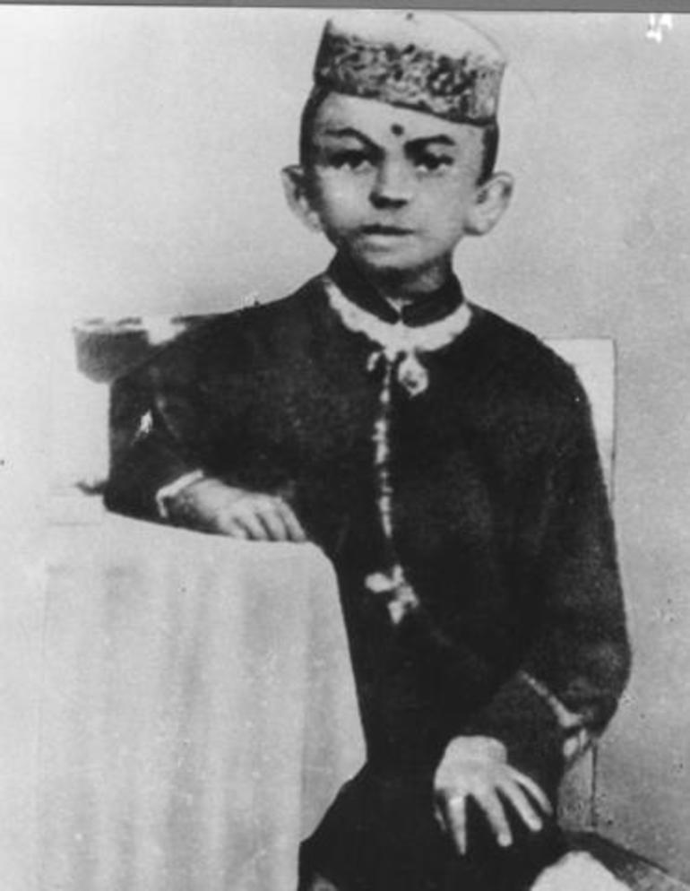
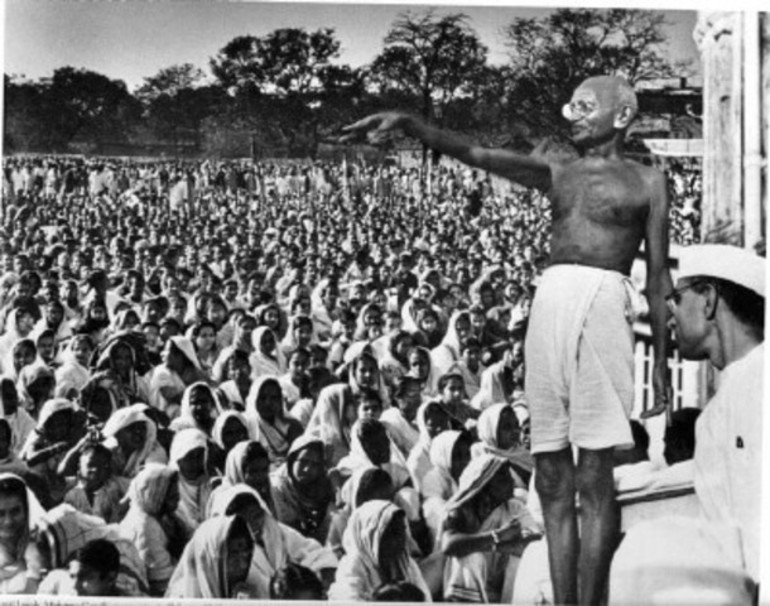
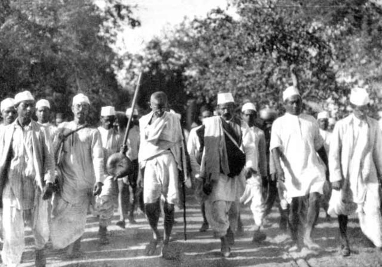
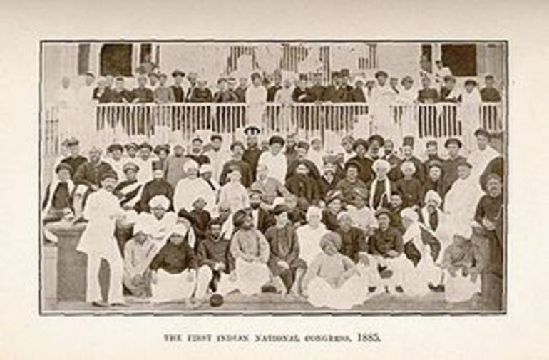
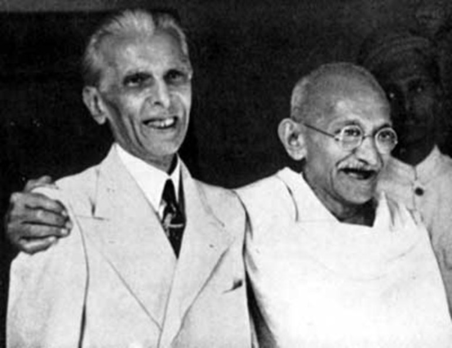
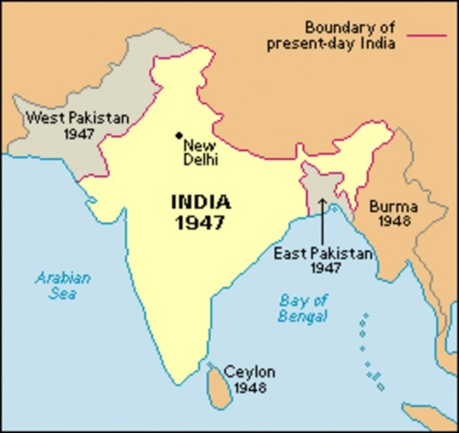
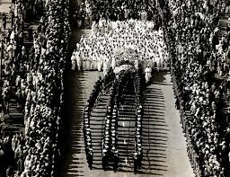

Oct 1869 Birth
Mohandas Karamchand Gandhi was born in Porbandar.

May 1883 Marriage
Gandhi gets married to Kasturbai through an arranged marriage.
Sep 1888 Law School
Gandhi leaves for England to study law.

Apr 1893 South Africa
Gandhi goes to South Africa to advise on a lawsuit for a year.
Jul 1907 Satyagraha
Gandhi refuses to register to the Boer Republic Transvaal, which was under control by the British.

Jan 1908 Gandhi goes to Jail
Gandhi gets arrested for refusing to cooperate with the Boer Republic Transvaal and spends two months in prison.
Apr 1919 Amritsar Massacre
British General Dyer commands his troops to slaughter Indians that were peacefully gathered for a festival.

Mar 1931 Salt March
Gandhi leads people to the sea to collect their own salt because the law forbid Indians to make their own salt and the tax on imported salt was high. About 50,000 people were arrested including Gandhi.

Aug 1942 Indian National Congress
The INC declares that it will only support the British War effort in WWII if they return with Indian independence. Gandhi is again imprisoned.

Jun 1944 Gandhi visits Muhammed Ali Jinnah
Gandhi tries to make an agreement to keep India whole after independence, but is unsuccessful.

Aug 1947 Indian independence
India is officially independent, but is separated into two countries, Pakistan and India.

Sep 1947 Fighting between Hindus and Muslims
Hindus and Muslims cause chaos and murders. Hindus migrate to India and Muslims migrate to Pakistan.
Jan 1948 Gandhi's Death
Gandhi is assassinated by Nathuram Vinayuk Godse, a Hindu nationalist. Nearly a million people attended his funeral.
